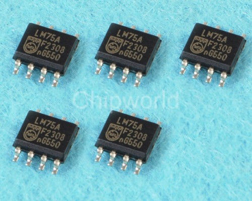
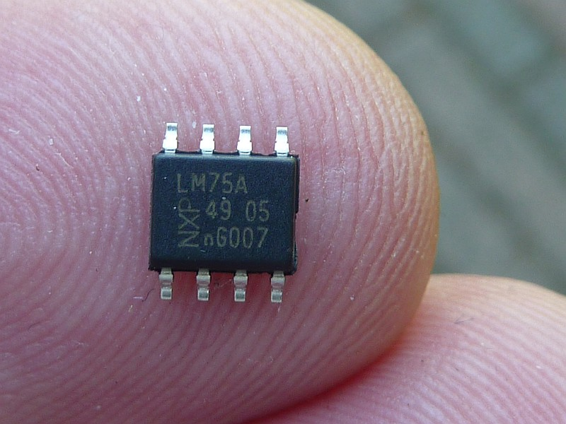
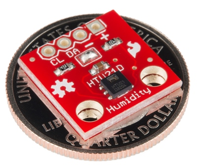

A completely different way of connecting temperature, humidity and lots of other sensors to the Raspberry PI is by using I2C compatible sensors like the AM2321. I2C is a software/hardware bus to connect several devices to the same GPIO pins and still control each one of them. This sharing of Raspberry resources offers important benefits:
The I2C bus is a 2-wire system (actually with power and ground wire it is 4) with a data pin and a clock pin. It is wired as follows, a device needs 4 wires as a minimum as shown in the diagram below. However, some devices have several additional pins to control bus addressing and interrupts for example.
The I2C bus is much faster than the Dallas bus at a cost of distance. Where it is possible with Dallas to have long leads to your sensors and a connection of a 100 meters to your RPI, with the I2C bus the distance will be in the range of cm (centimeters). Not that the latter matters a lot: I can easlily remember a dedicated RPI with a small board connecting 5-10 different sensors.
The wiringPI library offers support for reading the I2C bus, and there are several available at reasonable price. However the Dallas bus is easier to read, and it is very reliable. So let's review the I2C bus.
The following (not so expensive) sensors are available for connection to the LamPI system.
| device | alias | Address | Comment | xxx |
|---|---|---|---|---|
| :LM75a | 0x48 - 04F | Temperature Sensor (made by NXP and others) | ||
| BMP085 | GY-65 | 0x77 | Digital Barometric Pressure Sensor board Barometer sensor module | |
| BMP180 | GY-68 |
0x77 | This module replaces the BMP085 (according to Bosch it is pi compatible) | |
| SHT21 | GY-21 | 0x40 | Humidity and Temperature Sensor | |
| HTU21 | 0x40 | Humidity and Temperature Sensor | ||
| AM2321 | Humidity and Temperature Sensor (with awfully small pin-out) | |||
| BH1750FVI | 0x23 | Luminescence sensor | ||
| HMC5883 | GY-273 | 3-axis digital compass | ||
| MMA7455 | Digital accelerator sensor | |||
| MMA7455 | Digital accelerator sensor | |||
| MPL3115A2 | Altimeter, Temperature and Pressure sensor |
For a Raspberry revision level 2 you can scan the I2c bus for available devices with the command:
> sudo i2cdetect -y 1
If you have an old Raspberry (revision level 1) it would be "-y 0" to look that address.
The LamPI-node.js process will accep sensor messages from local or remote I2C sensors. The message format is detailed further in a separate section of the documentation. However, in general the "address" of the sensor is determined by the location of the sensor in the I2C bus, and the "channel" parameter will contain the last byte of the IP address in normal decimal form. The latter is important because if will make every sensor unique in the system (Lampi an dthe local network) as far as the sensor allows. For example, there can be only ONE sht21 sensor on every ssystem by there can be 8 LM75a sensrs of every system. In orer to make every system unique accross several Slave units, the cannel parameter which is normally "0" is made equal to the last part of the IP address.
So, if you plan to send yout own messages to the LamPI-node process take into account the following:
The LM75 is a cheap example of an I2C capable sensor. Several people have connected this sensor to the Raspberry and achieved promising results. I looked at these small packages and decided that soldering for me is not a real option as the pin out is really (REALLY) close and we risk to make a mess of our soldering job.
Therefore I ordered a set of 1.27mm converter boards to that I can solder these IC's to a very small pronter circuit board which in turn can easily be used in the Raspberry environment as it has 2.54mm spacing between the soldering pads.
|  |
As you can see in the picture, soldering these small IC’s is a challenge. |
After some time I decided to solder these tiny "ticks" to the converter boards and include the devices in the setup. The LM75a device shows up on the I2c bus at address 0x48 to 0x4f. With the pins A2, A1, A2 there can be 8 devices defined on the bus by connecting these pins to GND or VCC (making them 0 or 1).
 At my age, I need glasses, go outside and look under a certain angle in order read the text on the chip.Fortunately my small digital camera is a MUCH better device to read such small texts and so I took the picture above (you can click on it to magnify).
The pin-out of the LM75a is as follows:
Another interesting sensors available on the I2C bus is the barometric pressure sensor BPM085 which also goes by the name of GY-65. It can be bought on eBay with free shipping for as low as $6.00. Next to the barometric pressure it can also measure the temperature. Below you see a picture of my type of sensor. However that are a numbe of different boards on the market so yours might be looking somewhat different.

In order to make this sensor work you only need to connect 4 of the pins: Vcc (to header pin 1), SCL (header 3), SDA (header pin 5) and GND (pin 9).
These 4-pin sensors are inexpensive and available on eBay.
Hardware installation of this sensor is as easy as can be on the i2c bus. Just connect the clearly marked soldering terminals to the corresponding pins on the Raspberry connector. After booting give the command: "i2cdetect -y 1" and you will probably see the following output:

My sensor shows up on address 40 Hex.
I ordered one of these cheap compass modules on eBay for around 2$ a piece (including shipping).
This little IC again has a pin spacing of around 1.27mm which makes it difficult to work with. I have this sensor for a while now but because of the pin spacing did not yet include it in my setup (it looks like a micro DHT22)
I ended up soldering the small module to the same type of conversion board I also used for the LM75a temperature sensor, making use of pin 1 to 4 of the small board only.
The pin-out of the AM2321 is as follows:
Unfortunately I did connect them the other way to the small conversion board, but that's no major issue provided that I keep that in mind when soldering the board to one of the Raspberries' breakout boards.

I ordered two of these HTU21D modules on eBay for round 5$ a piece (including shipping).
By default, the I2C bus module is blacklisted on the RPI. Edit the /etc/modprobe.d/raspi-blacklist.conf file and uncomment the module (put a # character as first character of the line i2c-bcm2708). After this, probably rebooting the system is the best way to get everything initialised correctly.
Now load the module with the command 'modprobe -i2c-dev', or more permanently put 'i2c-dev' on a separate line in /etc/modules.
Load the package i2c-tools with the command 'sudo apt-get install i2c-tools'. Then use 'i2cdetect -l' to list the addresses where we can find the devices/sensors attached. With i2cdetect -y 1 (or 0 if you have the Raspberry model A) it is possible to get more information whether there are modules activated. Look for numbers (UU means cannot read)..
Unfortunately, we will have to do some programming for each and every sensor in order to make it output sensible information and usable by our LamPI system.
For a few of the I2C sensors, Adafruit made a Python interface which is quite helpful. Especially the Adafruit BMP library makes it simple to get started with I2C sensors.
In the LamPI system, wired sensors will normally be read by a small C program that either functions as a deamon, or is activated by the crontab (see crontab -l). After reading the sensor value, the program will activate an UDP socket on address 5001 (default value) and report the value read to the LamPI-node process.
Some modules are written in C/C++ and they will use the socket send modules that I developed for all sensors. Others can be read from the shell in which case they make use of the cmd-sensor modules which allows shell programs to broadcast sensor readings to the LamPI-node.js process (and other interested network parties).
For rrdtool there might be other options, it would be possible for example to store all sensor values on the local Raspberry (where the sensors are physically attached to) and move over rrd database values during certain time intervals. As rrdtool processing seems to be a cpu-intensive process, it makes senso to limit server processing of large amounts of data and do numbercrunching of historical data in the background (at night).

{kind=link}
{kind=link}
{kind=link}
{kind=link}
{kind=link}